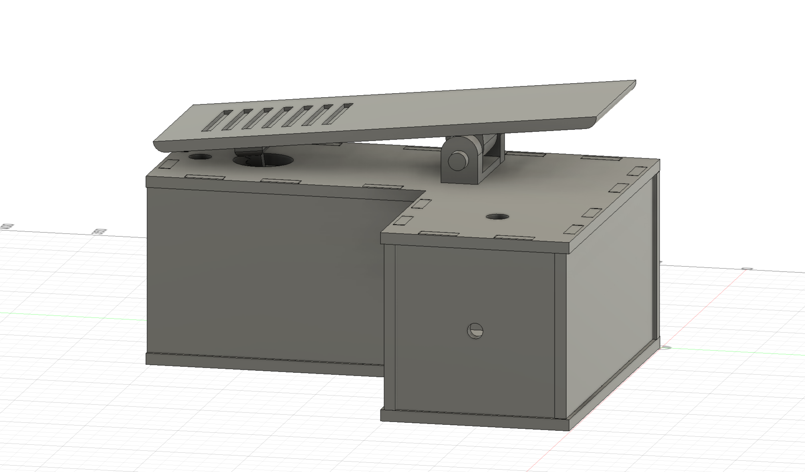
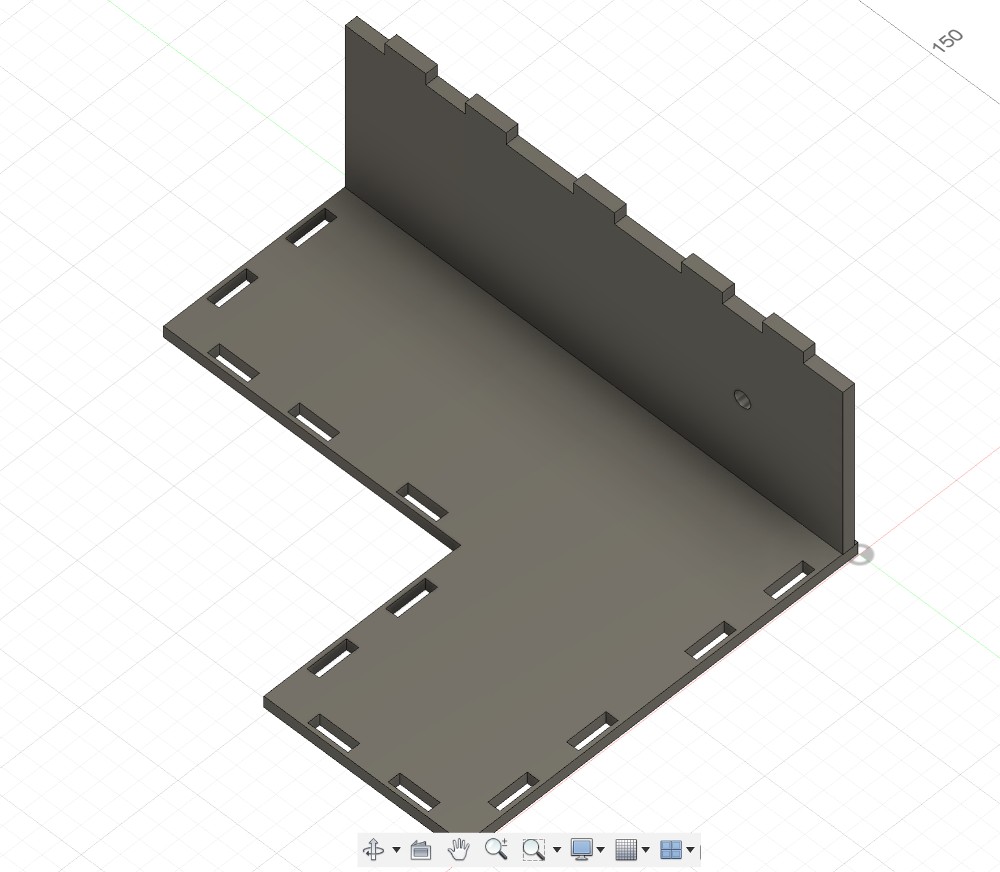

Final Project
Guitar Fuzz and Wah Pedal
- Product
- Inspiration/Motivation
-
Although I've played guitar since high school, I recently started playing much more and got a new amp/speaker. I've never owned a pedal however and have always liked the sound of a wah (think Sweet Child O' Mine solo, Voodoo Child by Jimi Hendrix, White Room by Cream, and Wah-Wah by George Harrison). Fuzz was mixed in this category as well with Jimi Hendrix, the Rolling Stones, The Who, and others.
- Materials
-
- 6mm Plywood
- Linear Potentiometer (B1 P160KN211)
- 1/4 inch aux jacks (similar to these)
- Stomp foot switches (https://www.amazon.com/dp/B0191AGULW?psc=1&ref=ppx_yo2ov_dt_b_product_details)
- ElectroCookie Protoboards (2)
- Various circuitry components (capacitors, op amps, resistors, transistors)
- Copper Tape
- Assembly
-
I was originally going to machine the box from a spare aluminum box in the shop, but decided to go with 6mm plywood and a press fit design because it would be easier to prototype with. The design I came up with in fusion looks like the images below. Here you can see the notches and "fingers" of the base and the wall. I then calibrated kerf for both the 3d printed parts and the laster cut wood pieces.


Once I soldered the buttons together in their respective circuit(s), I screwed down the potentiometer connected to the pot holder for the wah gears to interact. I also added rubber feet to the bottom of the circuits to prevent any shorting with the copper tape or anything else that may get in the way.

In the bottom of the image, just above the button labeled 1, is part of the system keeping the power jack in the housing. I made it so the powerjack fits into the rectangular slot in the wood very tightly, I super glued it, and then wanted something to grab it from the back and protect it from being pushed inward. I found some metal cap (even Bobby didn't know the name, I'm not sure) and used a screw to hold the jack more securely.
The pedal was a piece of acrylic I found that was very close to the dimensions in fusion, and I used a big drill bit to manually countersink the M3 screws used to attack the gear piece for the wah and pivot joints on the pedal. The day before the final project fair, when I was noodling around instead of filling out this documentation, I broke the wah pedal. This happened, I believe, because when I lifted up too far it skipped gears and then when it went back down the 3d print gave out and snapped the potentiometer off. Then, against all proper judgement, I took the housing apart and printed a new piece using the resin printer and making it wider for again more strength. I then also added a dowel behind the pedal prevent someone going beyond the capacity of the potentiometer (like me)...just don't go too crazy.
- Files